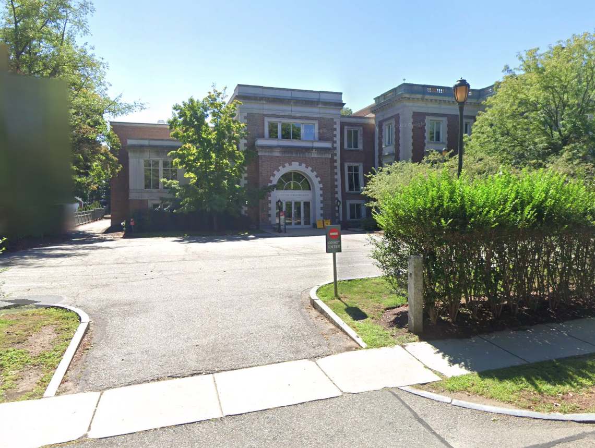

Precinct 1 Voting Location
Precinct 1's voting location is at Boston University / Wheelock College, 43 Hawes Street (Monmouth St entrance)

Where Do I Vote? (Enter your address)
Example Output

Precinct 1's voting location is at Boston University / Wheelock College, 43 Hawes Street (Monmouth St entrance)

Where Do I Vote? (Enter your address)